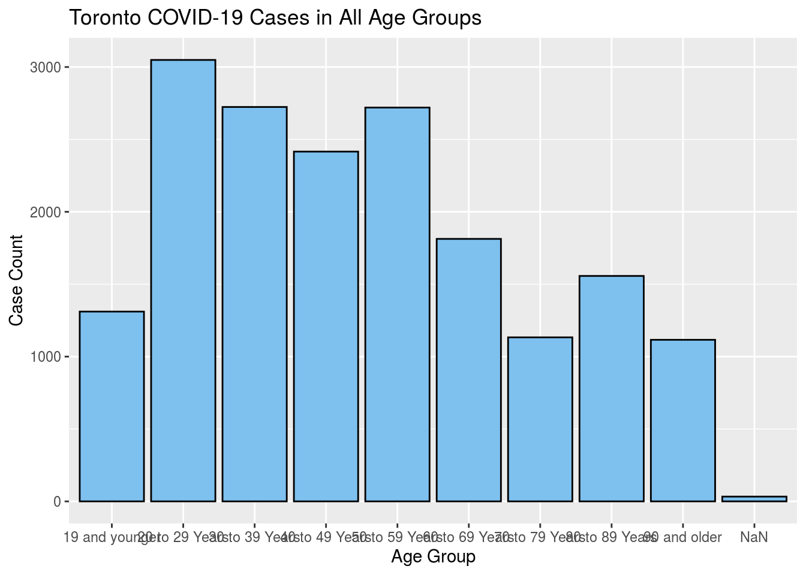
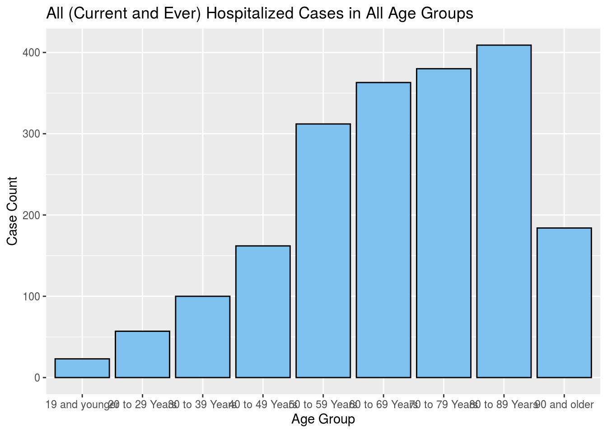
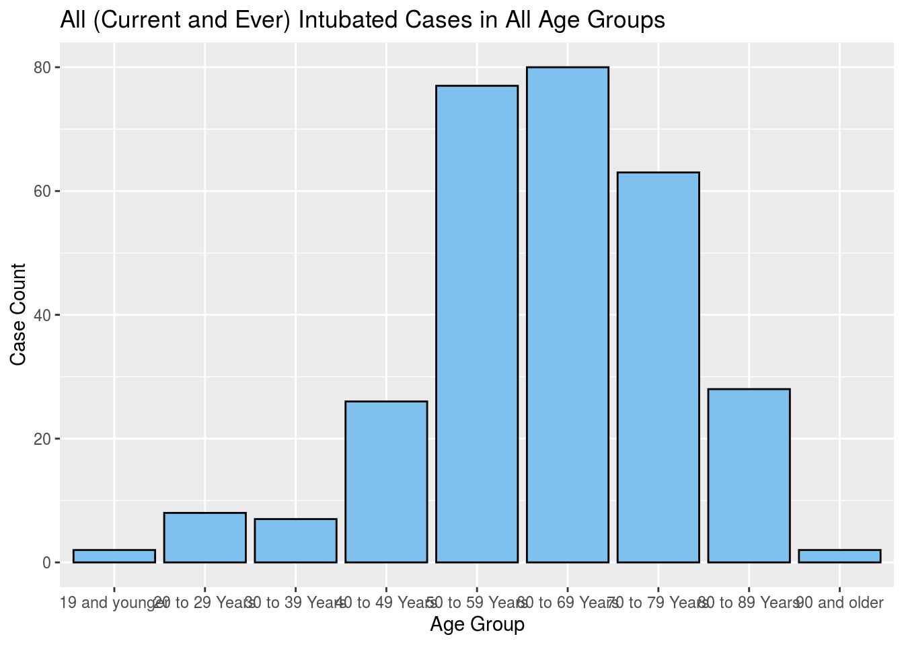
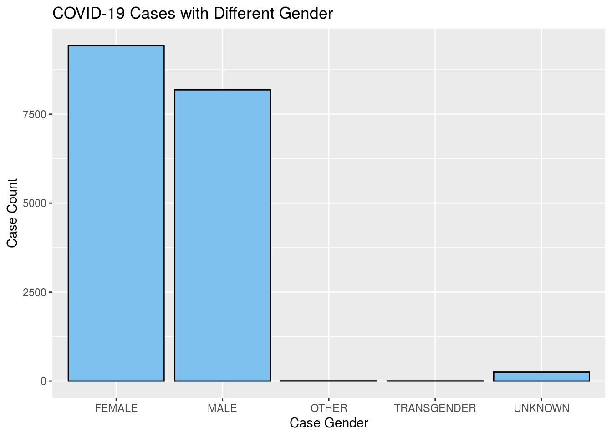
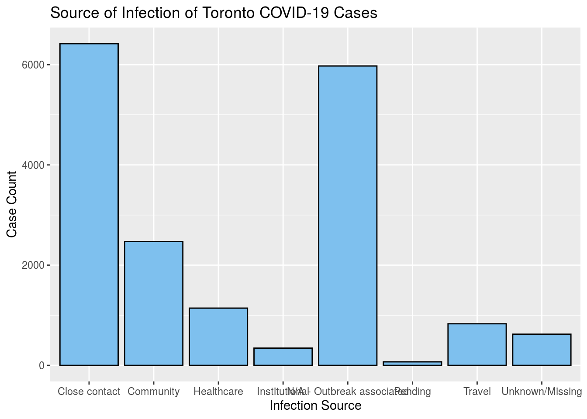
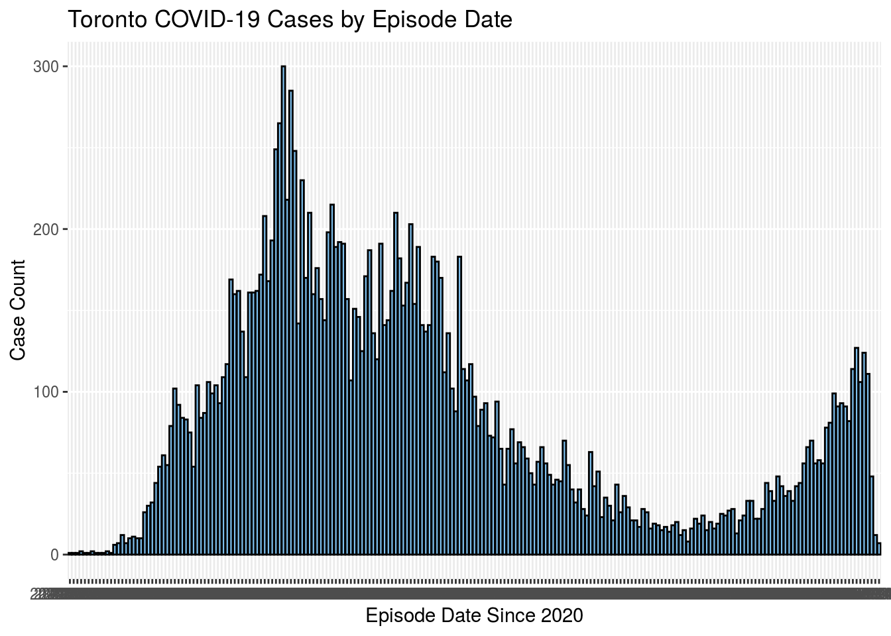

library(opendatatoronto)
library(tidyverse)
## ── Attaching packages ──────────────────────────────────────────────────────────────────────────────────────────────────────────────────────────────────── tidyverse 1.3.0 ──
## ✓ ggplot2 3.3.2 ✓ purrr 0.3.4
## ✓ tibble 3.0.3 ✓ dplyr 1.0.2
## ✓ tidyr 1.1.2 ✓ stringr 1.4.0
## ✓ readr 1.3.1 ✓ forcats 0.5.0
## ── Conflicts ─────────────────────────────────────────────────────────────────────────────────────────────────────────────────────────────────────── tidyverse_conflicts() ──
## x dplyr::filter() masks stats::filter()
## x dplyr::lag() masks stats::lag()
library(dplyr)toronto_covid_packages <- search_packages("COVID")
toronto_covid_resources <- toronto_covid_packages %>% list_package_resources()
toronto_covid_statistics <- toronto_covid_resources %>% get_resource()#Part.i Abstract
I used bar plots to visualize the Toronto COVID-19 data offered by Toronto Public Health. The observation were adult between age 19 and 69 was a primarily infected group by the COVID-19, and the case report shows clear evidence that COVID-19 cases, again, are rising fast. As data suggests, we need to prepare another incoming outbreak. Tools and data used Wickham et al. (2019),Gelfand (2020), and@citedplyr.
#Part.ii Introduction
I want to call the year 2020 as a drama, and COVID-19 plays as the protagonist. To view it globally, it affects many things from politics to economics; to view it near, it changes the way we work, study, and many other things imaginable. So, as the weather gets colder, we need to prepare for the future impact of COVID-19. And this study will show specific infection data of COVID-19 to help you understand that it is more lithal to elders than young people, and it is most likely coming back in the upcoming cold days.
#Part.iii Data Discussion
Toronto Public Health offers this data set, and it is the version updated by September 23, 2020. It contains 18 variables with 17872 reported COVID-19 infection cases. The variable features I used will be explained next below to its corresponding plot or code section.
glimpse(toronto_covid_statistics)
## Rows: 17,872
## Columns: 18
## $ `_id` <int> 143647, 143648, 143649, 143650, 143651, 1436…
## $ Assigned_ID <int> 1, 2, 3, 4, 5, 6, 7, 8, 9, 10, 11, 12, 13, 1…
## $ `Outbreak Associated` <chr> "Sporadic", "Sporadic", "Sporadic", "Sporadi…
## $ `Age Group` <chr> "50 to 59 Years", "50 to 59 Years", "20 to 2…
## $ `Neighbourhood Name` <chr> "Willowdale East", "Willowdale East", "Parkw…
## $ FSA <chr> "M2N", "M2N", "M3A", "M4W", "M4W", "M2R", "M…
## $ `Source of Infection` <chr> "Travel", "Travel", "Travel", "Travel", "Tra…
## $ Classification <chr> "CONFIRMED", "CONFIRMED", "CONFIRMED", "CONF…
## $ `Episode Date` <chr> "2020-01-22", "2020-01-21", "2020-02-05", "2…
## $ `Reported Date` <chr> "2020-01-23", "2020-01-23", "2020-02-21", "2…
## $ `Client Gender` <chr> "FEMALE", "MALE", "FEMALE", "FEMALE", "MALE"…
## $ Outcome <chr> "RESOLVED", "RESOLVED", "RESOLVED", "RESOLVE…
## $ `Currently Hospitalized` <chr> "No", "No", "No", "No", "No", "No", "No", "N…
## $ `Currently in ICU` <chr> "No", "No", "No", "No", "No", "No", "No", "N…
## $ `Currently Intubated` <chr> "No", "No", "No", "No", "No", "No", "No", "N…
## $ `Ever Hospitalized` <chr> "No", "Yes", "No", "No", "No", "No", "No", "…
## $ `Ever in ICU` <chr> "No", "No", "No", "No", "No", "No", "No", "N…
## $ `Ever Intubated` <chr> "No", "No", "No", "No", "No", "No", "No", "N…current_stats_1 <- colSums(toronto_covid_statistics == 'Yes')
current_stats_1[current_stats_1 > 0]
## Currently Hospitalized Currently in ICU Currently Intubated
## 34 11 4
## Ever Hospitalized Ever in ICU Ever Intubated
## 1990 428 293The code above demonstrates the current and ever hospitalized, ICU, and Intubated cases related to the infection of COVID-19. The ‘Currently’ cases are included in ‘Ever’ cases. The hospitalized rate is 0.11 (11%) and can be calculated by 1990 (ever hospitalized case)/ 17872 Cases (including probable cases). So it seems like most people infected by COVID-19 do not need to be hospitalized. But is that so? Let’s look into data more deeply.
#Part.iv Plots and Discussion
ggplot(data = toronto_covid_statistics) + aes (x = `Age Group`) + geom_bar(color = "black",fill = "skyblue2") + labs(x = 'Age Group', y = 'Case Count', title = 'Toronto COVID-19 Cases in All Age Groups') The plot above shows the age groups that infected by COVID-19. On the x-axis, the age group divides by multiple sessions; each session has a year range of 10. We can observe that adults between ages 19 and 69 were primarily infected groups by the COVID-19; this may be caused by daily activities like working, shopping, etc. We will come to the infection source later on in the study. Note: The NaN part in the plot is mainly caused by data missing on the cases’ age.
hospitalized_data <- filter(toronto_covid_statistics, toronto_covid_statistics$`Ever Hospitalized` == 'Yes')
ggplot(data = hospitalized_data) + aes (x = hospitalized_data$`Age Group`) + geom_bar(color = "black",fill = "skyblue2") + labs(x = 'Age Group', y = 'Case Count', title = 'All (Current and Ever) Hospitalized Cases in All Age Groups')
## Warning: Use of `hospitalized_data$`Age Group`` is discouraged. Use `Age Group`
## instead. When we look closely at hospitalized data, we found that elders are more likely to be hospitalized than young people. So ‘most people infected by COVID-19 do not need to be hospitalized’ is a false statement. So please be responsible for your actions and take good care of elders around you! They are more vulnerable than you when you are both exposed to the virus.
Intubated_data <- filter(toronto_covid_statistics, toronto_covid_statistics$`Ever Intubated` == 'Yes')
ggplot(data = Intubated_data) + aes (x = `Age Group`) + geom_bar(color = "black",fill = "skyblue2") + labs(x = 'Age Group', y = 'Case Count', title = 'All (Current and Ever) Intubated Cases in All Age Groups') The intubated data again shows the elder is extremely vulnerable when infected, most groups with age above 50 even have an intubated rate of more than 20%！ (20% was calculated roughly by 80 divide 350).
ggplot(data = toronto_covid_statistics) + aes (x = `Client Gender`) + geom_bar(color = "black",fill = "skyblue2") + labs(x = 'Case Gender', y = 'Case Count', title = 'COVID-19 Cases with Different Gender')  The above plot shows COVID-19 cases with different gender, and there are more female cases than male cases. A possible assumption is that female is more vulnerable than male. But it contains much possible bias such as male may treat COVID-19 as merely as getting cold and then do not report the case. But it is not the learning goal of my study this time. We may talk about this in future studies.
ggplot(data = toronto_covid_statistics) + aes (x =`Source of Infection`) + geom_bar(color = "black",fill = "skyblue2") + labs(x = 'Infection Source', y = 'Case Count', title = 'Source of Infection of Toronto COVID-19 Cases') 
The plot above introduces the infection source of reported Toronto COVID-19 cases. Two major infection sources are the close contact and outbreak-associated, then come to the community infection. The close contact, as it states, had confirmed close contact with confirmed/probable cases. The outbreak associated is also related to contact with infected people, especially during the rapid outbreak period. And the community infection cases do not have travel history outside of Ontario. The infection due to travel is not as much as imagined, but it is certainly the major source how the virus spread from countries to countries.
ggplot(data = toronto_covid_statistics) + aes (x =`Episode Date`) + geom_bar(color = "black",fill = "skyblue2") + labs(x = 'Episode Date Since 2020', y = 'Case Count', title = 'Toronto COVID-19 Cases by Episode Date')  Finally, it comes plot with episode date that helps us understand the real situation Toronto has experienced and is facing now. On the very left side of the x-axis is the date that the first few reported case in Toronto, which was back in late January and early February. The infection has grown exponentially due to a lack of understanding of the virus and no public health intervention. Later into the late march, decisive public health intervention was engaged, and the entire city was into lockdown; the daily cases were still growing but slowed and stopped after one month of lockdown. And then there was no much growing, and then the daily infection came down as summer came and reached the lowest daily grows in August the first. However, when people start to party, shopping, celebrating for the happy summertime, and thinking COVID will go away somehow, the daily infection cases rise again. As the weather gets colder and colder, it seems like a second wave of the outbreak is coming as people are probably lowering their guard. So be aware, it may not magically disappear as some president claimed. All of us should take good care and responsibility to protect ourselves and our community as a whole. Keep your hands sanitized! Keep your social distance! Reduce unnecessary activities! Let’s work together to defeat the COVID and bring back the party we love, the on-campus course we miss, and the everyday life we have back to non-COVID time. Thanks!
#Part.v Limitations
- The data is not up-to-date with the current infection situation since Toronto Public Health updates the data regularly.
- The infection sources are not specific enough, especially we can hardly get more infection information about the ‘outbreak-associated’.
- People with mild symptoms may not report themselves to Public Health since the case report is not mandatory (non-mandatory policy intervention); thus infection date can not represent the true situation that we are facing right now.
#Part.vi Reference
City of Toronto and Toronto Public Health, https://open.toronto.ca/dataset/covid-19-cases-in-toronto/
Gelfand, Sharla. 2020. Opendatatoronto: Access the City of Toronto Open Data Portal.
Wickham, Hadley, Mara Averick, Jennifer Bryan, Winston Chang, Lucy D’Agostino McGowan, Romain François, Garrett Grolemund, et al. 2019. “Welcome to the tidyverse.” Journal of Open Source Software 4 (43): 1686. https://doi.org/10.21105/joss.01686.